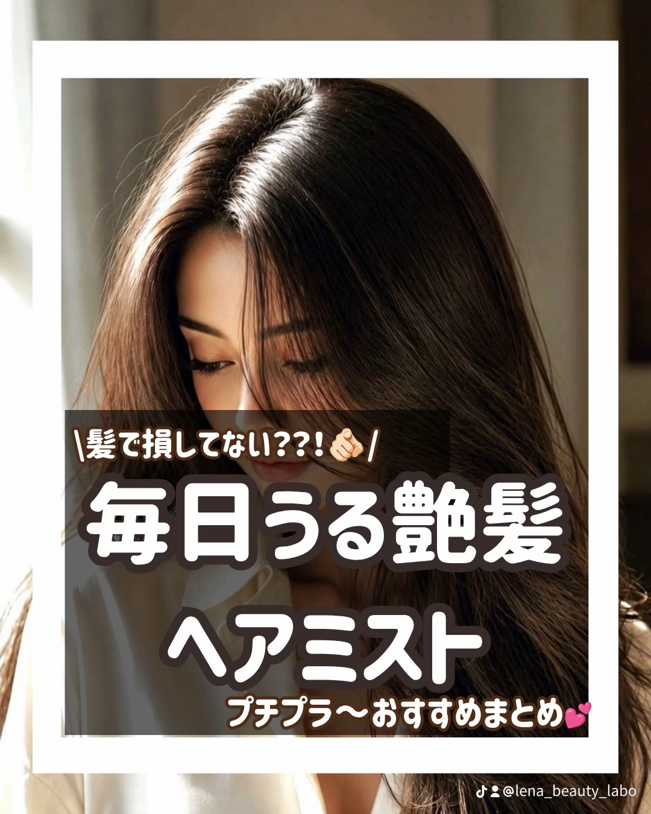
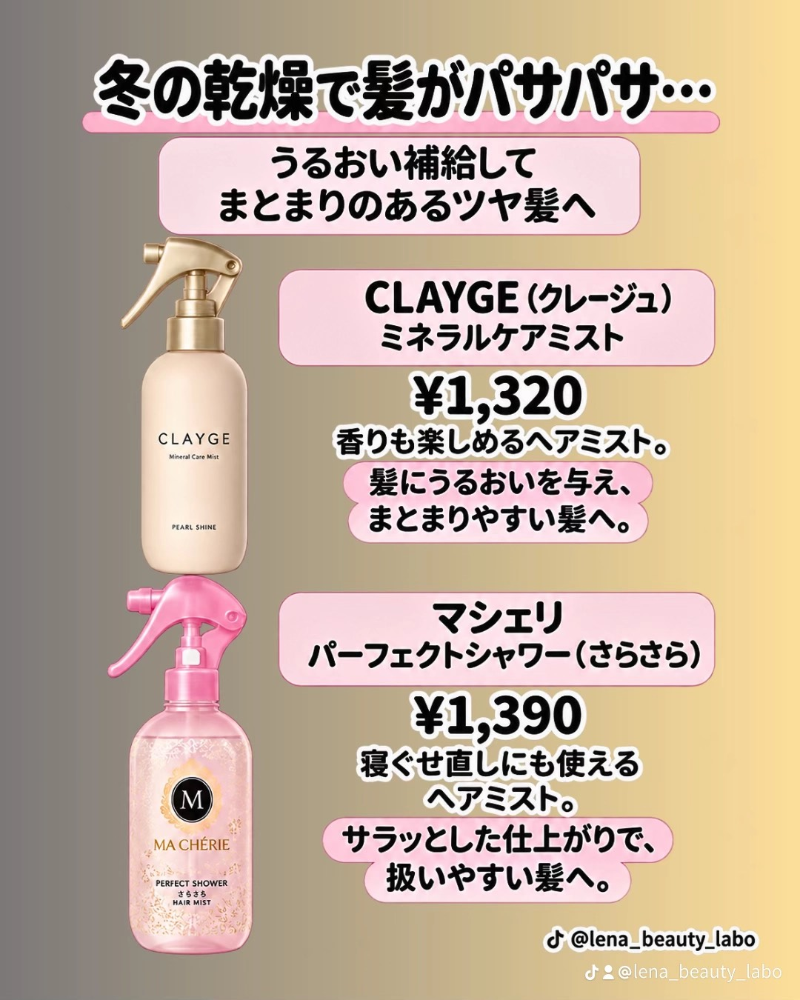
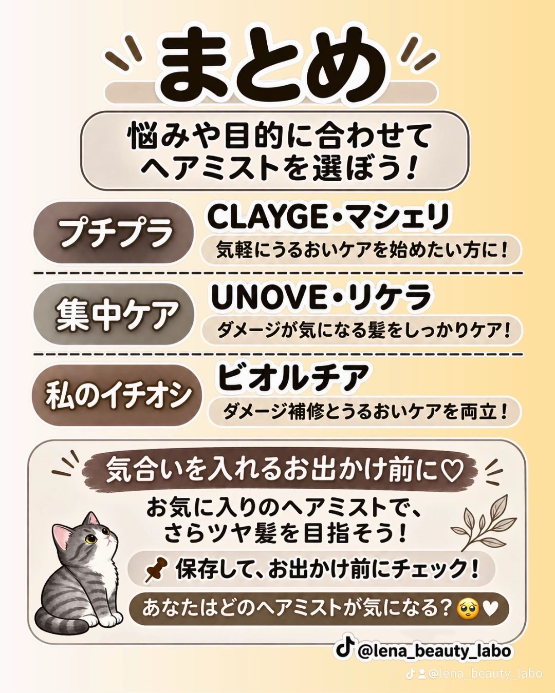

SNS CONTENT / TIKTOK
美容TikTok｜ヘアミスト比較投稿
冬の乾燥による髪のパサつきをテーマに、 複数のヘアミストを比較したスライド型コンテンツです。
制作サンプル



制作内容
テーマ選定、商品比較、スライド構成、 文章作成、Canva・AIツールを活用した画像制作。
構成の工夫
髪の乾燥という身近な悩みから入り、 商品ごとの特徴を比較しながら、 自分に合うアイテムを選びやすい流れを意識しました。
※制作実績の一部を抜粋して掲載しています。